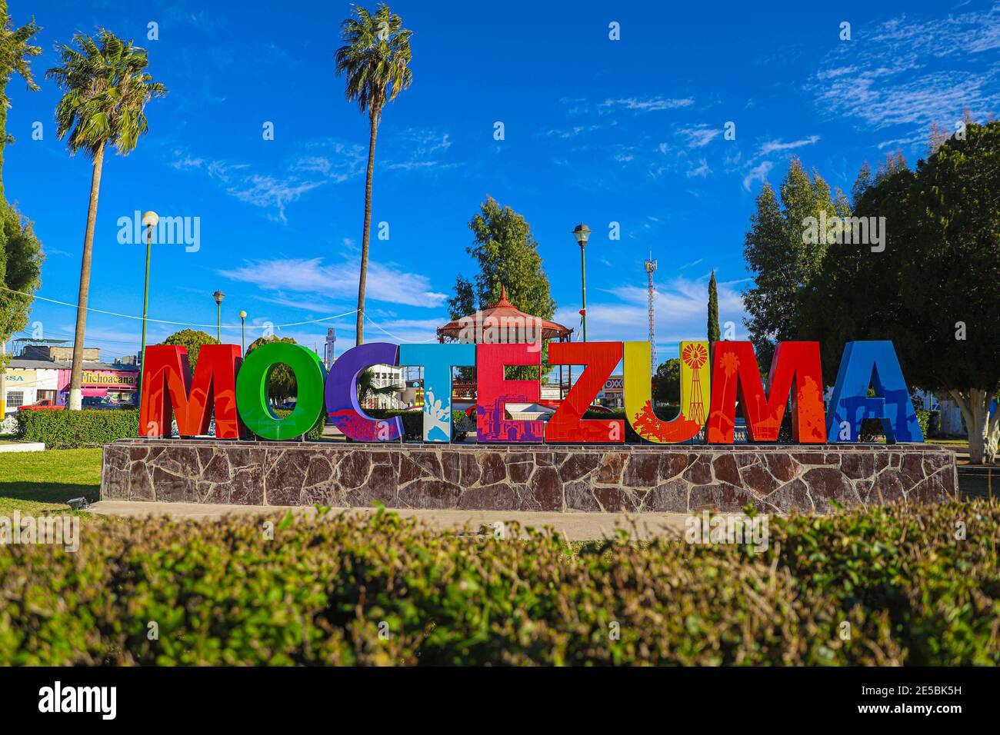
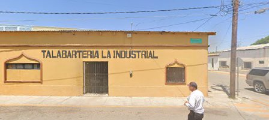
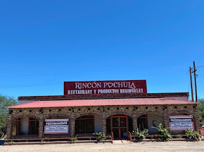
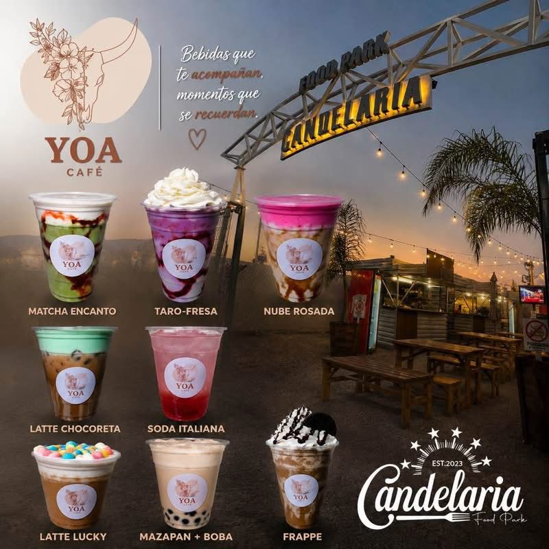
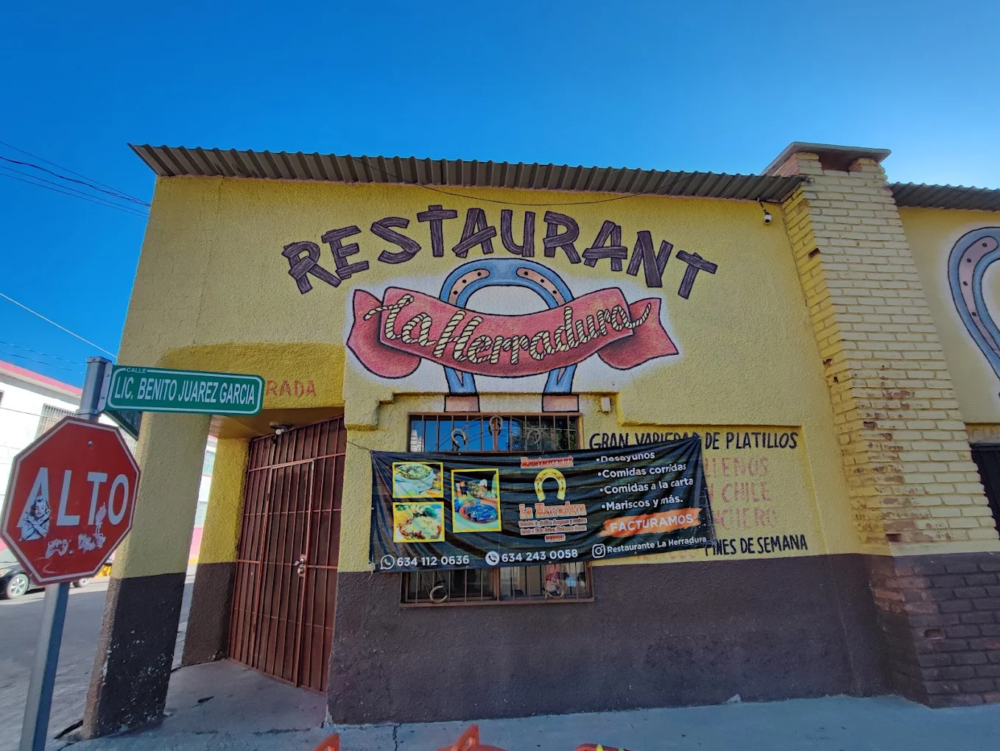

Inicio | Información de la localidad | Turismo | Negocios | Contacto
Moctezuma es un histórico pueblo mexicano ubicado en el centro del estado de Sonora, conocido como la puerta de entrada a la sierra sonorense. Se caracteriza por su riqueza histórica, sus tradiciones arraigadas y la activa vida comercial y ganadera de sus habitantes.
Un dato muy importante sobre Moctezuma es que cuenta con una arquitectura colonial destacada, siendo la Iglesia de Nuestra Señora de la Candelaria uno de los monumentos históricos más emblemáticos del municipio.

El turismo en Moctezuma, Sonora combina una rica arquitectura virreinal, hermosos paisajes de la Sierra Alta y una profunda tradición vaquera. Al ser el corazón comercial de la sierra, ofrece experiencias únicas de ecoturismo, cultura y gastronomía rural.
A continuación se detallan los principales establecimientos comerciales activos en la localidad[cite: 1]:
Talabartería La Industrial

Rincón Pochula

Yoa Café

La Herradura

Este sitio web fue creado como un directorio de negocios enfocado en dar a conocer los comercios, empresas y servicios disponibles en Moctezuma, Sonora[cite: 1]. El objetivo principal es apoyar al comercio local y facilitar la localización de establecimientos[cite: 1].
Posteriormente, el sitio se complementará con información turística, lugares de interés histórico y datos generales de la localidad[cite: 1].